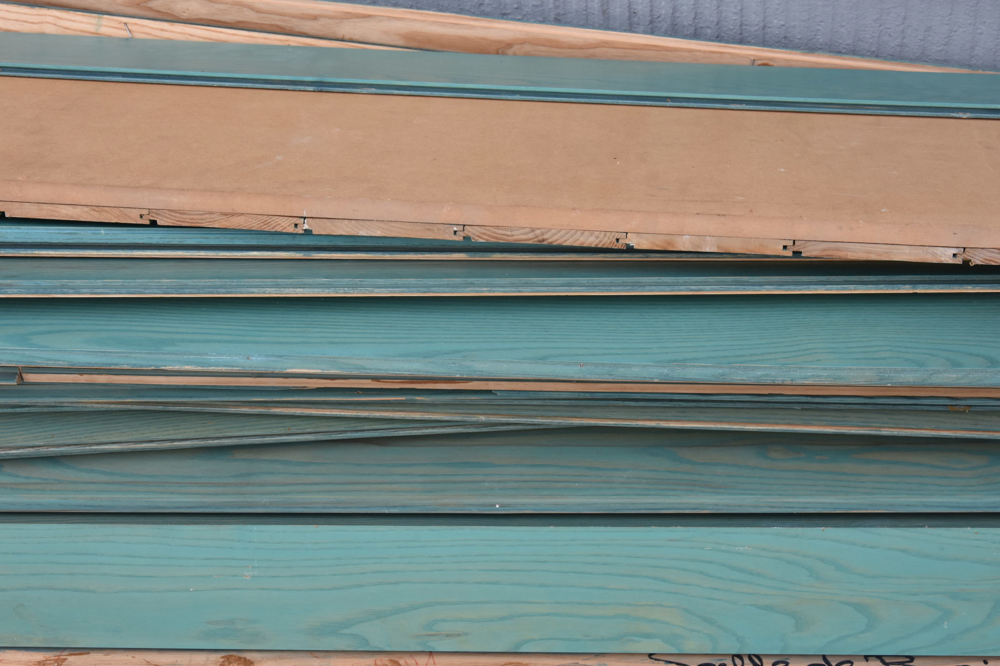

Research

My research focuses on analysing the emergence and destruction of quantum correlations in a wide range of systems while trying to grasp what "quantumness" is.
My interest in such quantum correlations was initially spurred by the surprising fact that primordial inhomogeneities in the standard inflationary scenario emerge from the amplification of vacuum fluctuations: genuine quantum effects on cosmic scales. Evidencing quantum correlations in the resulting distribution would directly prove this startling effect.
The physics at play when researching such questions in inflationary cosmology is ubiquitous and also shows up in the analysis in analogue gravity experiments designed to test vacuum amplification with table-top experiments. The idea of analogue gravity is to rely on a strict mathematical homology between the equations describing test fields in hardly observable gravitational systems (black holes, very early Universe) and perturbation in out-of-equilibrium or inhomogeneous table-top low energy quantum experiments, such as BEC or fiber optics.